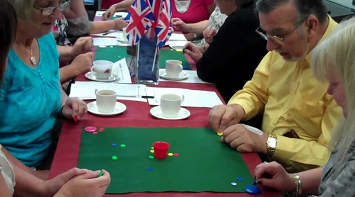

The University of Otago Tiddlywinks Club
Welcome to The University of Otago's Official Tiddlywinks club.
We meet twice a week to play and socialise. Play is fiercely competitive and, most importantly in a Dunedin winter, conducted indoors. Our club currently has a membership of around 30 with a committed core group of 20 or so. We are always keen to welcome new members. All equipment is provided by the club. There is no annual fee but members pay a weekly sub of $2.50 on the nights they attend.